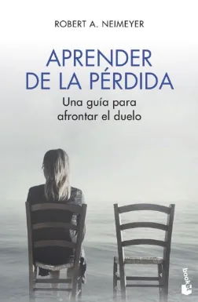
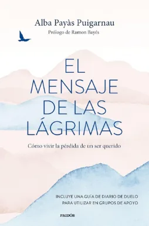
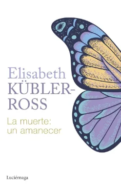
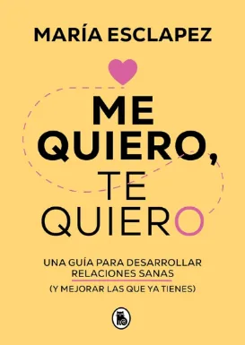
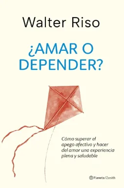
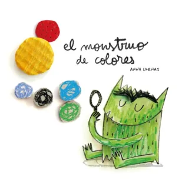
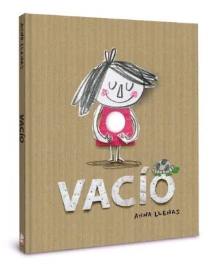
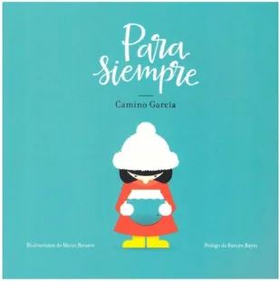
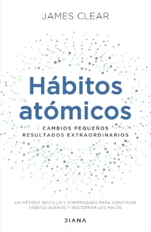

Aprender de la pérdida
Robert A. NeimeyerEntiende el duelo como un proceso activo de reconstrucción de sentido, con teoría y ejercicios prácticos.
Ver en Amazon
Entiende el duelo como un proceso activo de reconstrucción de sentido, con teoría y ejercicios prácticos.
Ver en Amazon
Ayuda a comprender el dolor de la pérdida con un tono cercano y sin soluciones simplistas.
Ver en Amazon
Conferencias y testimonios sobre la muerte como tránsito. Reconfortante si buscas un sentido trascendente.
Ver en Amazon
Explica por qué se repiten ciertas dinámicas en pareja y cómo construir vínculos más sanos. Tiene cuaderno de actividades.
Ver en Amazon
Distingue el amor sano del vínculo basado en el miedo o la necesidad. Útil para revisar patrones que se repiten.
Ver en Amazon
Ayuda a los niños a identificar y nombrar sus emociones, el primer paso para gestionarlas.
Ver en Amazon
Habla de convivir con una ausencia sin prisa por llenarla. Para niños y adultos, sobre todo en duelos familiares.
Ver en Amazon
Álbum ilustrado que presenta la muerte como parte del ciclo de la vida, con un lenguaje adaptado a los niños.
Ver en Amazon
No es un libro clínico, pero ayuda a ver cómo pequeños cambios sostenidos producen transformaciones reales.
Ver en AmazonLos enlaces a Amazon son de afiliado: si compras a través de ellos, el gabinete recibe una pequeña comisión sin coste para ti.
Si necesitas cualquier aclaración, escríbenos. Te respondemos en menos de 24 horas.